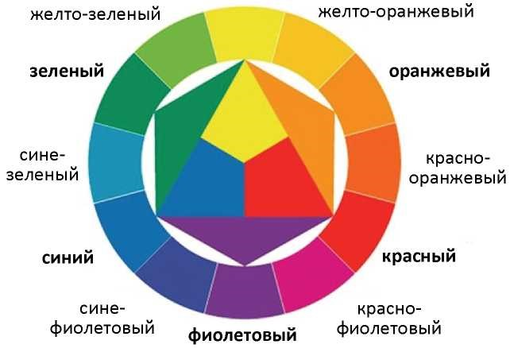

Цвет
Цвет — это свойство материальных объектов излучать и отражать световые волны определенной части спектра. В широком значении цвет означает сложную совокупность градаций, взаимодействий, изменчивость тонов и оттенков. Видимый человеком цвет возникает, с одной стороны, под влиянием объективного физического явления - света, с другой - в результате электромагнитного излучения различных частот на зрительный аппарат человека. Помимо этих факторов, на возникновение цветового ощущения человека влияют зрительный опыт и память, физиологические и психологические особенности. Цвет переживается не только визуально, но также психологически и символически, поэтому он изучается как сложнейший феномен многими специалистами.
Теория цвета — это совокупность знаний о цвете. В настоящее время наука по изучению цвета включает в себя два основных раздела: цветоведение и колористику. Цветоведение изучает цвет с точки зрения систематизации знаний физики, химии, психологии, физиологии. Колористика изучает основные характеристики цвета, гармонизацию цветовых множеств, механизм воздействия цвета на пространственное формообразование, средства и методы цветовой организации архитектурной среды.
Характеристики цвета
Цвета делятся на две категории - хроматические и ахроматические. К хроматическим цветам относятся красный, желтый, оранжевый, зеленый, синий, фиолетовый и все их смеси. Хроматические цвета различаются индивидуально. К ахроматическим (не имеющим цвета) относятся белый, черный и все оттенки серого, они различаются только по светлоте. Человеческий глаз способен различить до 400 переходных оттенков от белого к черному.
Выделяют четыре цветовые группы: спектральные, светлые, темные и пастельные (или сероватые) цвета. Светлые - цвета
спектра, смешанные с белым цветом; темные - цвета спектра, смешанные с черным; сероватые - цвета спектра, смешанные с разными оттенками серого.
К основным характеристикам цвета относят: цветовой тон, насыщенность и светлоту. Цветовой тон - признак хроматического цвета, по которому один цвет отличается от другого: зеленый, синий, фиолетовый. Насыщенность - степень отличия хроматического цвета от ахроматического, схожего с ним по светлоте. Если добавить к чистому красному цвету немного серого, который одинаковый с ним по светлоте, то новый цвет будет менее насыщенным. Светлота - качество цвета, по которому его можно приравнять к одному из цветов ахроматического ряда, т. е. чем выше яркость, тем светлее цвет.
Цвет и эмоции
Использование цветов и их сочетаний в коммерческих и бизнес-целях основывается на теории цвета или психологическом и эмоциональном восприятии цвета человеком. Грамотное цветовое оформление способно сыграть решающую роль в достижении поставленных перед сайтом целей путем коррекции восприятия пользователями веб-страниц.
В целом теория цвета в веб-дизайне базируется на трех составляющих:
- контраст;
- дополнение;
- резонанс.
Использование резко контрастирующих друг с другом цветов и оттенков позволяет подчеркивать остроту, пикантность, важность отдельных элементов или информации. Контрастные оттенки, т. е. диаметрально противоположные, выбираются с помощью цветового круга. Чтобы подобрать контрастирующую пару для того или иного оттенка, достаточно выбрать соответствующий сегмент на цветовом круге, который представлен на рисунке, после чего выбрать соответствующий сегмент на противоположной стороне.
Дополняющими являются цвета и оттенки, не конфликтующие друг с другом, а подчеркивающие и способные усилить эффект друг друга. Дополняющие цвета также подбираются по цветовому кругу. У каждого цвета существуют два дополнения, расположенные до и после основного цвета, которым может выступить любой из шкалы. В качестве примера можно привести следующий: если основным цветом выбран лиловый, то дополняющими его цветами будут расположенный до него в круге розовый и следующий после него голубой.
Цветовой круг
Подбор цветовых и оттеночных сочетаний одной гаммы - яркой и теплой (например, желтый, оранжевый, красный и их оттенки) или холодной и темной (например, фиолетовый, голубой, зеленый и их оттенки) позволяет дизайнеру достичь нужных целей в создании восприятия информации на сайте. Так, теплые яркие цвета, особенно в своем сочетании, эмоционально воспринимаются лучше, побуждают к действию, а холодные способны расслабить, успокоить, сосредоточить, т. е. цвета одной гаммы дополняют друг друга, усиливая эмоциональный эффект.
Цвет способен оказывать на человека определенное эмоционально-психологическое воздействие. Задачей веб-дизайнера является использование закономерностей цветовых решений для создания необходимой атмосферы для сайта с помощью цветового оформления. Психологические особенности эмоционального восприятия цветов и их сочетаний в значительной мере зависят от особенностей культуры и менталитета.
Красный - один из самых ярких, бросающихся в глаза, стимулирующих цветов палитры. Красный — это сильный энергетический заряд, способный мотивировать, принуждать, возбуждать. Красный цвет эмоционально воспринимается как олицетворение молодости, силы, власти, важности. Красный - хороший выбор, когда необходимо привлечь внимание, выделить важное, предупредить, побудить двигаться в необходимом направлении. Вместе с тем красный в больших количествах может вызвать гиперстимуляцию, побудив агрессию, поэтому с количеством особенно ярких оттенков следует быть осторожным.
Оранжевый цвет достаточно яркий и заметный, в зависимости от интенсивности оттенка способен вызывать у пользователя целую гамму эмоций. Используемый в качестве основного в дизайне, оранжевый цвет стимулирует интерес пользователя, оказывая бодрящий эффект. Эмоциональная и ассоциативная окраска оранжевой гаммы — это бодрость, энергия, радость, энтузиазм, движение, творчество.
Желтый цвет — это универсальный цвет палитры, ассоциирующийся со счастьем, солнцем, энтузиазмом, архаичностью (в его более темных спокойных оттенках). Желтый заряжает энергией, но одновременно может создавать ощущение комфорта. Темные оттенки желтого и цвет золота вызывают любопытство, обеспечивают пользователю ощущение старины, стабильности, мудрости, дарят уверенность в авторитетности и профессионализме компании.
Зеленый цвет - довольно сложный цвет с двояким характером синего и желтого. Зеленый цвет ассоциируется с ростом, природой, открытием возможностей, а также темой финансов, успеха, изобилия (более темные, насыщенные тона). Зеленый цвет выступает в палитре мостом между холодной и теплой цветовой гаммой. Он одновременно обладает расслабляющим и умиротворяющим воздействием синих оттенков и энергичностью, и теплотой желтых.
Синий цвет и его эмоциональная окраска существенно зависит от тона. Так, светлые оттенки синего способны вызывать чувство спокойствия, открытости и безопасности, в то время как темные тона ассоциируются с надежностью, незыблемостью, опытом, которым можно доверять, и неким сплином. Это позволяет отнести синий цвет к универсальным цветам.
Фиолетовый - цвет величия, роскоши, романтики, передаваемых светлыми оттенками, а также тайны и мистики, с которыми
ассоциируются более темные насыщенные тона фиолетового. Так, пурпурный оттенок вызывает эмоциональное ощущение атмосферы щедрости и богатства.
Черный цвет - нейтральный, но вместе с тем и очень сильный цвет, ассоциирующийся с изысканностью, сдержанностью, властью. Черный цвет в сочетании с другими цветами способен вызывать или подчеркивать разные эмоции и ассоциации. Черный может выступать доминирующим цветом в дизайне, однако опасность его чрезмерного использования состоит в том, что страница может ассоциироваться у посетителя с негативом. Умеренное использование черного для оформления отдельных блоков и элементов сайта создает у посетителей ресурса ощущение изысканности, лаконичности, минимализма, элегантности, стиля.
Белый цвет традиционно считается цветом добродетели, чистоты, простоты. Это хороший вариант для фона сайтов, выполненных в минималистическом дизайне. Существенной особенностью, свойственной только белому цвету, выступает то, что белый наиболее выгодно и эффектно подчеркивает все остальные цвета, эмоционально резонируя с ними.
Серый цвет относится к нейтральным цветам, однако может также создавать эмоциональный эффект. Серый ассоциируется с формальностью, меланхолией, нейтральностью, грустью, сдержанностью. Серый в различных его оттенках представляет собой баланс белого и черного, дающий тот или иной эффект. В дизайне хорошо смотрятся несколько различных оттенков серого цвета, а сочетание серого с яркими цветами выглядит заметно и ярко.
Бежевый цвет также можно отнести к нейтральным, так как сам по себе он довольно невыразительный и тусклый. Вместе с тем бежевый хорошо сочетается с другими цветами, принимая их характер, но при этом позволяя разбавить общую картину, избежав чрезмерности и излишней насыщенности. Бежевый цвет хорошо использовать в качестве фонового или второго цвета. Светлые тона бежевого смотрятся современно и свежо, более темные передают чувство традиционности и приземленности.
Цвет слоновой кости является неординарным в палитре и может принимать оттенки от молочного до кремового. Этот цвет способен передавать те же эмоции, что и белый, только придавая им больше мягкости. Цвет слоновой кости ассоциируется с простотой, элегантностью и комфортом, а в дизайне веб-страниц, используемый вместо белого, способен смягчать контраст между темными цветами.
Цветовые модели
Цвета образуются в природе двумя противоположными путями. Во-первых, источники света (солнце, лампочки, экраны компьютеров и телевизоров) излучают свет различных длин волн, воспринимаемый глазом как цветной. Во-вторых, попадая на поверхность несветящихся предметов, свет частично поглощается, а частично отражается, и отраженное излучение воспринимается глазом как окраска предметов. Таким образом, цвет объекта возникает в результате излучения или отражения. Для описания излучаемого и отраженного цвета используются разные математические модели. Более подробно с информацией о цветовых моделях можно ознакомиться в пособии О. А. Новосельской «Теория цвета».
Гармония цвета в веб-дизайне
Цветовая гармония — это сочетание отдельных цветов или цветовых множеств, образующее органическое целое и вызывающее эстетическое переживание.
Цветовая гармония в дизайне представляет собой определенное сочетание цветов с учетом всех /их основных характеристик: цветового тона, светлоты, насыщенности, формы, размеров, занимаемых этими цветами на плоскости, их взаимного расположения в пространстве, которое приводит к цветовому единству и наиболее благоприятно эстетически воздействует на человека. Различают монохромную гармонию, которая строится на одном хроматическом цвете и всевозможных его оттенках, которые будут светлее основного, если разбавлять его белым в разных пропорциях, или темнее, если к основному цвету добавлять черный; аналоговую гармонию, состоящую из трех оттенков, идущих друг за другом; комплементарную гармонию, в которой находятся любые два цвета, расположенные друг напротив друга на цветовом круге; сплит- комплементарную гармонию, в которой выбирается основной цвет и два соседних противоположному - такой выбор делает гармонию менее агрессивной и не такой бескомпромиссной.
Триадная гармония образуется сочетанием цветов, расположенных по углам равностороннего треугольника, помещенного в центр цветового круга. Тетрадная гармония строится на правиле вписывания в цветовой круг квадрата или прямоугольника. Как и во всех других случаях, можно взять пару ярких цветов, а другие два приглушить.
Считается, что низ сайта не должен быть визуально тяжелее, чем верх. Это значит, что насыщенные или темные цвета располагаются вверху, а книзу слегка приглушаются. Чем крупнее объект, тем меньше ему требуется дополнительное акцентирование цветом. И наоборот, мелкий элемент легче увидеть, если он насыщен. Это касается мелких пиктограмм, стрелок и т. п.
При выборе цветового решения в дизайне сайта следует придерживаться определенных правил:
- элементы должны выполняться в едином стиле, будь то пиктограммы, иконки, заглавные буквы параграфов или рисованные заголовки;
- элементы страницы должны повторяться при условии логического деления информации, это могут быть иконки, стрелки, картинки и пр.
В заключение данной главы подчеркнем важность цвета в веб-дизайне. Грамотные и сбалансированные цвета могут влиять на эффективность сайта, делая его привлекательным и понятным для большинства посетителей или, наоборот, создавать ощущения дискомфорта и нежелание продолжать работу с веб-ресурсом.
=======Операторы и выражения
Оператором называется нечто, принимающее одно или более значений (или выражений, если говорить на жаргоне программирования), и вычисляющее новое значение (таким образом, вся конструкция может рассматриваться как выражение).
Операторы можно сгруппировать по количеству принимаемых ими значений. Унарные операторы принимают только одно значение, например, ! (оператор логического отрицания) или ++ (инкремент). Бинарные операторы принимают два значения; это, например, знакомые всем арифметические операторы + (плюс) и - (минус), большинство поддерживаемых в PHP операторов входят именно в эту категорию. Ну и, наконец, есть всего один тернарный оператор, ? :, принимающий три значения, обычно его так и называют -- "тернарный оператор" (хотя, возможно, более точным названием было бы "условный оператор").
Арифметические операторы
Помните школьные основы арифметики? Описанные ниже операторы работают так же.
Оператор присваивания
Базовый оператор присваивания обозначается как "=". На первый взгляд может показаться, что это оператор "равно". На самом деле это не так. В действительности оператор присваивания означает, что левый операнд получает значение правого выражения, (то есть устанавливается значением).
Результатом выполнения оператора присваивания является само присвоенное значение. Таким образом, результат выполнения "$a = 3" будет равен 3. Это позволяет делать трюки наподобие:
>>>>>>> 05265e0a9f92a8f7df50e4468fb9d9ff4060a9de